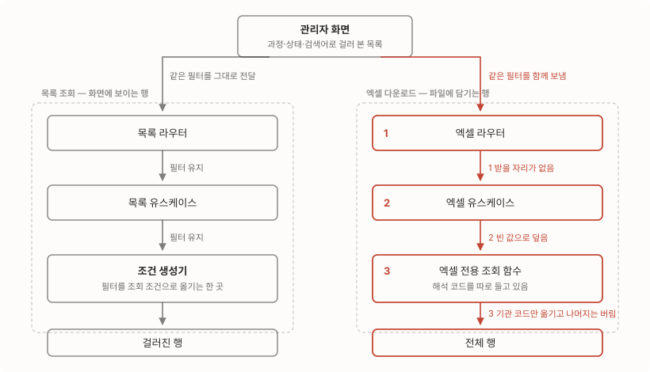

회사에는 개인정보를 다루는 서비스가 넷 있어요. 국비지원 과정을 운영하는 SaaS, 채용 플랫폼, 커뮤니티, 그리고 사내 LMS요. 지난 한 달 동안 이 넷의 관리자 화면에 개인정보 통제를 서비스마다 넣었어요. 지난번에 쓴 건 그중 한 곳의 이야기였고 오늘은 나머지를 포함해 전체를 하나로 묶어서 써요. 서비스마다 각각 작업했지만 만들고 보니 이건 하나의 체계였거든요.
작업을 관통한 감상은, 통제를 만드는 일과 서비스 전체의 규칙으로 만드는 일은 다른 종류의 일이라는 거예요. 만들 때는 기능을 설계하지만 넓힐 때는 정책을 정합시키게 되더라고요. 무엇을 어디에 기록할지, 마스킹 판정을 누가 할지, 실무자가 쓰던 양식을 어디까지 지킬지. 여기부터는 그 결정들을 하나씩 풀어볼게요.
시작할 때는 엑셀을 화면이 만들고 있었어요
시작 시점의 구조부터 봐야 해요. 관리자 화면들은 목록 API로 받은 데이터를 브라우저에서 CSV로 조립해 내려주고 있었어요. 그것도 화면마다 제각각의 코드로요. 서버 입장에서는 목록 조회가 한 번 있었을 뿐이라, 파일이 만들어졌다는 사실 자체를 모르고요. 사유도 안 받고, 기록도 안 남고, 암호도 없어요. 통제라는 게 걸릴 자리가 없는 구조죠.
마스킹 판정도 화면 쪽에 있었어요. 브라우저가 “이 사람은 최고관리자다”라는 값을 주소 뒤에 실어 보냈고, 서버는 그 값을 그대로 믿었거든요. 그래서 주소에 그 값을 참으로 붙이기만 하면 마스킹 없는 전체 개인정보가 나가는 API가 있었어요. 반대 방향도 있었고요. 어떤 화면은 그 값이 거짓으로 박혀 있어서 최고관리자조차 원본을 못 봤어요. 판정을 클라이언트에 맡기면 이렇게 양쪽으로 다 어긋나더라고요.
그리고 실무자들이 있어요. 운영팀은 이 화면들의 CSV로 실제 업무를 해요. 컬럼 순서에 맞춘 대조 절차, 다른 시스템에 붙여 넣는 양식이 이미 굳어 있고요. 통제를 넣겠다고 파일 모양이 바뀌면 통제가 아니라 업무 방해가 돼요.
결정 1. 기록은 한 곳으로 모았어요
사유 필수, 항목 화이트리스트, 다운로드하는 사람이 그 자리에서 입력한 암호로 파일 잠그기. 통제 세트 자체는 지난번 글에서 정한 그대로예요. 이번에 새로 정한 건 그 세트를 어디에 어떻게 두느냐였어요. 어느 서비스의 어느 화면에서 받아도 같은 절차를 밟게 하는 것, 그게 목표였으니까요.
다르게 간 건 기록의 위치예요. 서비스마다 자기 데이터베이스에 다운로드 기록을 남기면 “지난주에 누가 어디서 무엇을 받았나”를 물을 때 서비스 수만큼 뒤져야 하거든요. 감사는 한 화면에서 봐야 감사라서 기록 API를 권한 서비스 한 곳에 만들고 나머지가 거기로 쏘게 했어요. 도입한 당일에 나머지 서비스의 로컬 기록 코드를 제거하는 것까지 갔고요. 두 벌이 공존하는 기간을 남기면 나중에 어느 쪽이 진짜인지부터 다투게 되니까요.
관리자 행위 전반의 감사 로그도 함께 구축했어요. 여기엔 결이 다른 결정이 하나 숨어 있는데, 다운로드 기록은 실패하면 다운로드를 막지만(fail-closed), 감사 미들웨어는 실패해도 관리자 화면을 세우지 않아요(fail-open). 개인정보 반출은 기록 없이는 일어나면 안 되는 일이고 일반 관리 업무는 로그 때문에 멈추면 안 되는 일이라서요. 같은 “기록”이어도 지키는 것이 다르면 실패 정책도 달라져요.
결정 2. 마스킹 판정을 서버로 가져왔어요
클라이언트가 보내던 최고관리자 여부 값은 받지 않기로 했어요. 권한 시스템을 조회해 서버가 판정하고 판정이 안 되면 마스킹 쪽으로 떨어져요. 화면 목록은 권한에 따라 마스킹, 엑셀은 통제(사유·기록·암호)를 통과한 사람에게 원본을 줘요. 이 정책 분리도 전 서비스에 같은 내용으로 통일했고요.
가려진 화면은 새 유출 경로를 하나 만들어요. 화면에서 별표로 가려진 값이 그대로 수정 폼에 담겨 저장되면, 원본이 그 별표 문자열로 덮이는 경로요. 그래서 회원·카드 정보의 저장 경로에는 마스킹 패턴 문자열을 거부하는 역기입 가드를 함께 넣었어요. 통제로 화면을 가릴수록 이 가드가 필요해지거든요.
마스킹 함수 자체의 버그도 이 과정에서 나왔어요. 값에 따라 엉뚱한 자리를 가리던 것이었는데, 같은 함수가 서비스마다 복제돼 있어서 수정도 복제된 곳 전부에 나가야 했어요. 복제된 유틸은 버그도 복제한다는 걸 이 작업에서 여러 번 확인했죠.
판정과 반출을 정리하고 나니 저장이 남았어요. 커뮤니티 서비스는 관리자 연락처가 평문으로 저장되고 있어서 암호화 저장으로 바꾸고, 상세 화면은 마스킹으로 통일했어요. 반출만 막고 저장을 놔두면 반쪽이니까요.
결정 3. 파일 모양은 실무자 것을 그대로 지켰어요
새 다운로드 경로는 서버가 엑셀을 만들지만 열어본 파일은 실무자가 쓰던 구 CSV와 같아야 한다고 정했어요. 여기에 생각보다 손이 많이 갔고요. 맞출 게 세 층위였거든요. 컬럼 라벨, 컬럼 순서, 값 포맷이요. 셋 다 화면마다 다르고, 어느 하나만 어긋나도 실무자의 대조 절차가 깨져요.
한 컬럼으로는 재현이 안 되는 양식도 있었어요. 구 CSV가 항목 하나하나를 컬럼으로 펼쳐 두고 해당 여부만 표시하던 화면이요. 참조할 목록을 조회해 컬럼을 동적으로 펼쳐 재현했고, 그 조회가 실패하면 해당 컬럼들 없이 나머지만 내려가게 했어요. 양식 하나 때문에 다운로드 전체가 실패하면 안 되니까요.
하나의 다운로드 코드가 서로 다른 두 화면을 겸하던 곳은 파라미터로 라벨을 바꾸는 대신 용도별로 분리했어요. 같은 전화번호 컬럼을 한 화면은 “연락처”, 다른 화면은 “핸드폰 번호”로 부르는 상황이라, 하나의 코드에 두 양식을 욱여넣으면 스위치가 계속 늘어나거든요. 조회와 행 조립처럼 정말 같은 부분만 공용 함수로 남겼어요.
검증 라운드에서 통제 사이로 새는 곳들이 나왔어요
결정 셋을 다 넣고 나니, 정작 새는 곳은 결정을 잘못한 자리가 아니라 결정이 닿지 않은 자리였어요. 후속 확인에서 구멍이 여럿 나왔거든요. 제일 큰 계열은 엑셀이 화면 필터를 무시하고 전체를 내보내던 결함이에요. 화면에서 조건을 걸어 좁혀 받았는데 파일에는 필터 이전의 전체가 들어 있는 증상이죠.

목록 조회와 엑셀 다운로드는 같은 필터 값을 들고 출발하지만 서버 안에서 지나는 코드가 달라요. 새로 낸 엑셀 경로가 위 세 곳 중 한 곳에서 필터를 잃고 있었고, 잃는 자리는 곳마다 달랐어요. 형태는 달라도 결과는 같아서, 화면 필터가 내부 조회까지 실제로 도착하는지 확인하는 테스트를 함께 남겼고요.
구멍은 반대쪽에도 있었어요. 항목을 고르게 해놓고 파일에는 전체 컬럼을 넣던 곳, 원본이어야 할 엑셀에 가려진 값이 실리던 곳처럼요. 통제 항목들은 전부 멀쩡히 붙어 있는데 통제가 보지 않는 자리에서 새고 있었다는 게 이 라운드의 요약이에요.
파일 그 자체도 지켜야 했어요
채용 쪽 내보내기를 만들면서는 파일 그 자체를 방어 대상으로 다뤘어요. 셀 값을 만드는 함수 한 곳에 방어를 모았고요. 눈에 안 보이는 제어문자는 지워요. 값 하나에 섞여 있어도 내보내기 전체가 실패하거든요. 수식으로 해석될 수 있는 값도 무력화하고요. 사용자가 입력한 값이 수식이 되면, 담당자가 파일을 여는 순간 다른 사람의 개인정보가 외부로 전송될 수 있어서요.
유출 역추적용 일련번호는 새로 발급하지 않고 감사 기록의 식별자를 재사용해 파일 문서 속성에만 박았어요. 실명이나 시각까지 속성에 박으면 지우려는 동기가 생기지만 무의미해 보이는 일련번호는 손대지 않을 가능성이 높다는 판단이었죠. 속성은 색인일 뿐이고 추적의 본체는 감사 기록이니까요. 대용량 쪽은 스트리밍 쓰기로 바꿔 1만 행 기준 최대 메모리를 34.5MB에서 2.1MB로 줄였어요.
무엇이 달라졌나
| 확산 전 | 확산 후 | |
|---|---|---|
| 파일 생성 | 화면이 목록 데이터로 CSV 조립 | 서버가 통제(사유·항목·암호·일련번호)를 걸고 생성 |
| 다운로드 기록 | 없음 | 권한 서비스 한 곳에 전 서비스 기록 집중, 실패 시 다운로드 거절 |
| 마스킹 판정 | 화면이 보낸 값을 신뢰 | 서버가 권한 조회로 판정, 실패 시 마스킹 |
| 화면과 파일 | 화면 마스킹을 그대로 반출 | 화면은 마스킹, 파일은 통제 통과 시 원본 |
| 파일 양식 | 화면마다 제각각의 CSV | 구 CSV의 라벨·순서·값 포맷을 서버가 재현 |
| 파일 암호 | 없음 | 다운로드하는 사람이 그 자리에서 입력한 암호로 잠금 |
파일 암호 줄만 한마디 덧붙이면, 처음 만든 규칙은 관리자 휴대폰 뒤 4자리와 공통 문자열을 조합해 서버가 암호를 만들어 주는 방식이었어요. 만들기는 편한데 공통 문자열이 한 번 새면 그동안 나간 파일이 다 같이 열리거든요. 그래서 다운로드하는 사람이 그 자리에서 입력한 암호로 잠그는 방식으로 통일하고, 자동 생성 규칙과 공통 문자열 설정은 지웠어요.
옮기는 일은 정책을 정하는 일이었어요
돌아보면 코드를 짜는 시간보다 정책을 정하는 시간이 길었어요. 기록을 어디에 모을지, 판정을 누가 할지, 실패하면 무엇을 멈추고 무엇을 살릴지, 실무자의 양식을 어디까지 지킬지. 서비스마다 각각 넣은 작업이었지만 그게 회사의 규칙이 된 건 네 서비스가 같은 답을 갖게 됐을 때라고 생각해요.
다음에 비슷한 일을 하게 되면, 시작 전에 정책 질문 목록부터 쓸 것 같아요. 구현은 서비스마다 알아서 하면 되는데, 답을 맞춰야 할 질문이 무엇인지는 미리 정해둬야 하더라고요.
[확인 필요]
- 검증 라운드의 결함들이 처음 어떻게 드러났는지는 커밋의 작업 번호와 “QA 후속” 표기로만 남아 있어요. 개발 환경 실측으로 재현했다고 적힌 건도 있어 경로가 하나가 아니고, 최초 발견 경위는 기록으로 특정하지 못했어요.